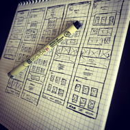
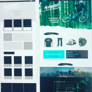

Momentum
Momentum a concept e-commerce web site. The idea behind this was to have a clean minimalist approach to for without too much clutter that you see on a lot of merchandise based websites which can be distracting when trying to find your perfect peice of apperal. Thus allowing your customer to shop happy, shop fast, and have an ejoyable expeirence doing so.

During the wireframe sketch session I like to get all the major ideas out and to see what looks good and ideal for your site.

While making the Hi resolution mockup yo can begin to see what really does work and what does not. At this point we can begin to start making adjustments according to your needs.
Technology used
Html
sass | css
Javascript
sketchapp
codekit